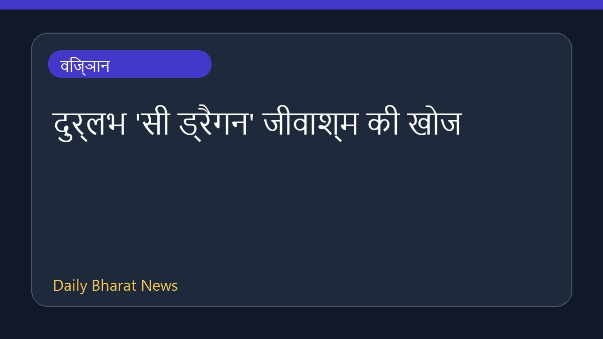

दुर्लभ 'सी ड्रैगन' जीवाश्म की खोज

स्नो में फंसने की खतरनाक घटना के बाद पर्वतारोहण छोड़कर जीवाश्म तलाशने वाले मैथ्यू मायरस्कॉ ने एक दुर्लभ 'सी ड्रैगन' की खोज की है। उन्होंने यह नया रास्ता अपनी जान बाल-बाल बचने के अनुभव के बाद चुना था। बीबीसी साइंस से मिली जानकारी के अनुसार, उन्होंने बर्फ में फंसने की जानलेवा परिस्थिति का सामना करने के बाद पहाड़ छोड़कर जीवाश्मों से भरे समुद्र तटों की ओर रुख किया था। इस खोज से जुड़ी अन्य विस्तृत जानकारियां फिलहाल सीमित हैं।